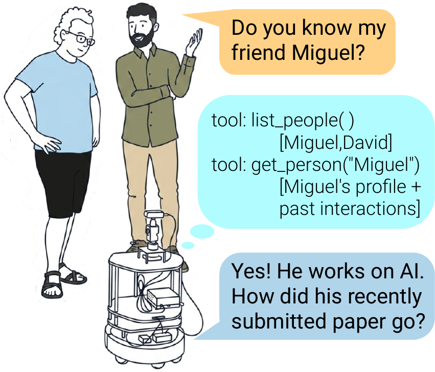
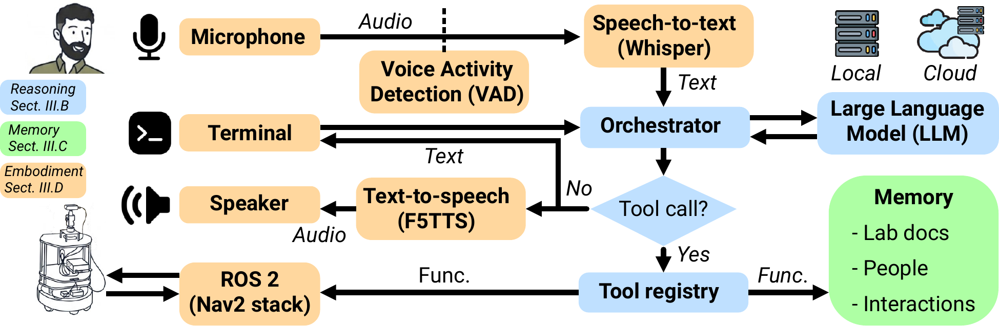
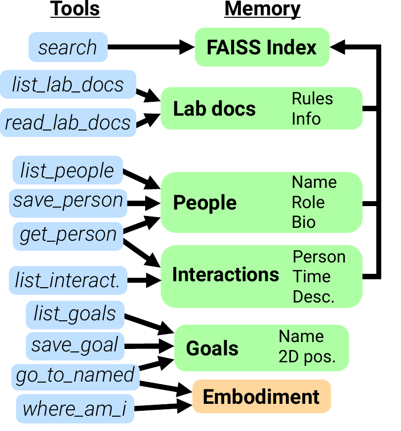
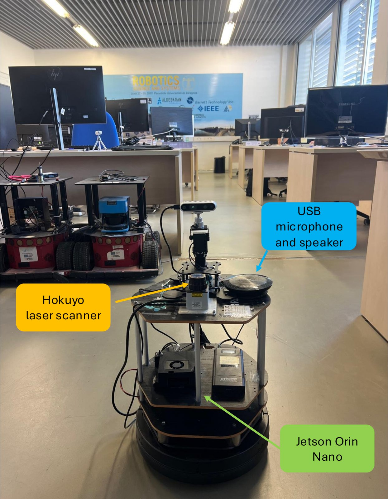

The robot talks with users over a voice interface and uses tools to reach its memory and the physical world. The memory is organised to save and retrieve workplace information, such as lab documents, people and past interactions, in a controlled and safe way.
Abstract
Large language models (LLMs) have made natural-language interaction with social robots increasingly capable, but the memory that personalizes this interaction is typically built for a single user, as a personal assistant, rather than for the collective knowledge of a shared workplace. Moreover, such agents are predominantly virtual, without the physical presence that embodiment affords. We present an embodied lab companion that maintains an explicit memory of the people, interactions, and shared knowledge of a research group. Its memory is stored as human-readable records that an LLM-based agent can read and modify through format-preserving tools, which assist the agent by reducing the required generation length, avoiding hallucinations from corrupting the memory, and allowing the records to be programmatically managed and human-audited. The proposed system integrates spoken interaction, local LLM inference with tool use, and autonomous navigation running on a mobile robot platform. We validate it through real interactions with lab members, evaluating its agentic tool use and the faithfulness with which it builds and recalls group memory.
The problem
LLMs know only what they learned in training and what sits in their current context. Retrieval-augmented generation lets an agent pull in personalised knowledge, but it is usually built around one user and a personal assistant. A workplace is different. Many people share rules, documents, projects and relationships, and the useful knowledge belongs to the group. Most agents are also purely virtual. A robot that is physically present in the lab can approach people, guide them to places, and be part of the space.
Group-level memory
Lab documents, people, interactions and places are stored as inspectable Markdown records shared by the whole group.
Harnessed through tools
The LLM never edits memory directly. Format-preserving tools read and write it, which keeps hallucinated content out of the stored records.
Embodied on a robot
Spoken interaction and ROS 2 navigation run on a mobile base, which can save new places and guide people to them.
Method
System overview
The system has three functional modules: reasoning, memory and embodiment. The reasoning module stays idle until a user speaks or types to the robot. An orchestrator passes the input to the LLM. The LLM either replies or asks the orchestrator to call one of the registered tools. The tool's result goes back to the LLM, and the loop continues until it produces a final reply. Tools are the agent's only route to the memory and to the robot.

Overview of the system. Colours mark the reasoning (blue), memory (green) and embodiment (orange) modules. Audio is transcribed by a speech-to-text model after voice-activity detection, and replies are spoken back with text-to-speech. Tool calls are code functions that reach either the memory or the robot through ROS 2.
Reasoning and tool use
One LLM handles both dialogue and tool selection, hosted either on board or on a remote endpoint. Each tool is a deterministic code function declared with a name, a description and a typed parameter schema. Within a single turn the agent can chain several retrievals or actions before it answers. Tools are registered conditionally: write tools are disabled during public visits to the lab, and motion tools are absent when the robot base is off.
Below is a real turn from the memory evaluation, step by step:
{
"found": true,
"name": "David",
"profile": "# David\n**Surname:** Morilla\n**Role:** PhD student\n**First met:** 2026-07-03\n\n## Bio\nLast year PhD student working on active perception. Approaching the end of PhD journey.\n\n## Questions to ask next time\n",
"recent_interactions": [{
"file": "david/2026-07-03-1628.md",
"summary": "David Morilla left the conversation. We discussed his upcoming lab lunch proposal and his excitement about finishing his PhD.",
"date": "2026-07-03 16:29"
}]
}
One get_person call returns the profile and the person's latest interactions, so a single tool call is enough to answer.
Memory
The robot's knowledge is stored as plain Markdown files, organised in directories by type. Four record types model persistent information about a workplace:
Documents
Rules and guidelines provided by people, used as the source of truth for technical, organisational and operational questions.
People
One summary per known person. Unknown speakers are asked for a name, a detail to tell them apart, and a short bio.
Interactions
A timed log of conversation summaries. Retrieving a person also brings in their last k interactions, so context carries across sessions.
Goals
Named 2D poses in the map frame, each with a short description, used as navigation targets.
Reading and writing are harnessed through tools. For example, save_person takes the name, surname, role and bio as separate parameters instead of letting the LLM rewrite a file freely. This:
- keeps generations short,
- prevents hallucinations from corrupting the store,
- keeps a known text structure that code can process, and
- leaves every record readable and editable by lab members.
For semantic search, every file is split into overlapping chunks of about 150 words. Each chunk is embedded with a text-embedding model and stored in a FAISS index. A search query is embedded the same way and returns the closest chunks across all record types.

Representative tools and the memory categories they access.
What the memory actually looks like
These records were written by the agent during the experiments (names normalised; see the note at the end of the page).
# David **Surname:** Morilla **Role:** PhD student **First met:** 2026-07-03 ## Bio Last year PhD student working on active perception. Approaching the end of PhD journey. ## Questions to ask next time
# Ana **Surname:** Murillo **Role:** Professor **First met:** 2026-07-03 ## Bio Professor and lab lead. Supervises Fernando and César (Computer Vision and AI). ## Questions to ask next time
# Juan **Surname:** Dendarieta **Role:** Lab technician **First met:** 2026-07-03 ## Bio Lab technician working with drones. ## Questions to ask next time
# Conversation — 2026-07-03 16:28 **With:** David **Summary:** David Morilla left the conversation. We discussed his upcoming lab lunch proposal and his excitement about finishing his PhD.
# Conversation — 2026-07-03 16:31 **With:** Maria **Summary:** Maria Peribañez, a first-year PhD student working on affordance prediction, asked for an overview of the lab rules. I explained the safety, workspace, and network protocols before she left.
# Note — 2026-07-03 16:33 **Topic:** Lab Improvements Drone battery safety rule: Batteries should always be blocked out.
# Lab rules
## Safety
- Ask your supervisor for using any robot on the lab.
- The Kobuki base is rated for indoor use only — never take it outside.
- Always wear closed-toe shoes when robots are moving in the lab.
- Emergency stop: turn the switch on the back of the Kobuki base.
- Always fly the drones inside the net. Props never on outside.
+ Drone batteries should always be kept blocked out.
- Verify every functionality after a robot crash.
## Workspaces
- Each researcher works in their own ROS workspace under `~/ros/`.
- Do **not** add `source` commands to your `.bashrc` — use a `setup.sh` in your workspace instead.
- Python dependencies go in a workspace-local virtualenv.
...
The highlighted line in lab_rules.md was added by the agent when the technician pointed out a missing safety rule (see below). Everything else in the file was left unchanged.
Embodiment

The agent runs on a TurtleBot 2 (Kobuki) base with a Hokuyo laser scanner and a Jetson Orin Nano as the onboard computer. A USB microphone and speaker with press-to-talk allow private spoken interaction.
- Listening: Silero VAD detects speech, and Whisper transcribes it.
- Speaking: F5-TTS clones, in real time, a reference voice designed offline with Qwen3-TTS from a text description.
- Moving: Nav2 runs on a map built with SLAM Toolbox. Tools can read the current pose, save it as a named goal, and navigate to goals.
- Identity: the robot asks the speaker's name and looks it up in memory. After a long silence it checks again who it is talking to.
Everything is integrated in ROS 2, so the agent's tools reach standard robotics stacks, which keep their own safety checks.
Experiments
We structure the evaluation around three questions:
Does the agent use its tools appropriately during natural conversation to register people, retrieve and update knowledge, and record interactions?
How faithfully does the agent answer from accumulated knowledge, and does it avoid hallucinating when information is missing?
Can the agent use its body to save named locations and navigate to them on explicit or abstract requests?
In all experiments users talk to the robot by voice. Everything except the LLM runs on the Jetson Orin Nano inside a Docker container. The LLM is Gemma-4-26B-A4B-it, served from an NVIDIA DGX Spark (128 GB) in the lab over the local network.
Q1 · Conversations and interactions
We first seed the system with lab documents describing the group's rules. We then hold five conversations, each with a different participant and purpose, chosen to exercise different tool paths:
Across the conversations the agent generally used its tools as intended: it looked up speakers when they arrived, created profiles for new people, and logged interactions during and at the end of each conversation. The records were not always complete. In the senior student's conversation, the first log captured why he proposed the lunch (to celebrate recently accepted papers), but the summary written when he left replaced that record with a shorter one that left out the reason (full transcript below). Because that fact was lost, the agent could not answer a later question about it in the memory evaluation.
The conversations also showed some interesting behaviours:
The robot saved a profile with the surname missing, noticed the gap, asked for it, and completed the record.
Told about two researchers who were not present, the robot recorded the supervision in the professor's own profile and did not create profiles for people it had never met.
Asked to edit a document, the robot refused a blind edit. It then read the file before rewriting it, so the existing content was preserved.
lab_rules.md) and Saving navigation goals (nav_tutorial.md).Asked for technical details it did not have, the robot said so and pointed the visitor to the people who would know.
A badly transcribed sentence did not derail the conversation. The robot understood "love rules" as the lab rules and fetched the right document.
~/ros/, and you should use a setup.sh rather than adding commands to your .bashrc. Anything else you're curious about?Full seeding conversation with the senior PhD student, including every tool call
The second log_interaction replaced the first record with a shorter summary that lost the reason for the lunch. This causes the only Tier 1 error in the memory evaluation below. The last two lines show the robot checking who it is talking to when a new user arrives.
Q2 · Memory usage
After the seeding conversations, an evaluator asks a fixed list of 35 questions about the stored people and interactions, in four tiers of increasing difficulty. The last tier contains distractors and negative probes, where the correct behaviour is to decline rather than invent an answer.
| Type | Questions | Correct | Accuracy |
|---|---|---|---|
| T1 Single-person recall | 8 | 7 | |
| T2 Cross-person / role | 10 | 10 | |
| T3 Group-level | 6 | 5 | |
| T4 Distractors | 11 | 11 | |
| Overall (T1–T4) | 35 | 33 | 94.2% |
Question-answering results by tier. Tiers 1–3 measure useful recall. In Tier 4 the correct answer is to decline.
With memory accessed through tools, the agent answered 33 of 35 questions correctly (94.2%) and declined all 11 distractors instead of inventing answers. Browse a selection of the questions and the robot's answers below:
The two errors are informative. The T1 miss is not a retrieval failure: the reason for the lunch had been overwritten in memory during seeding, and the robot correctly said it did not know why instead of guessing. The T3 miss is a reasoning slip, where the robot left one person out when listing everyone. When a question was unintelligible because of transcription errors, the robot asked for clarification instead of fabricating:
a) Missing information T1
b) Asking for clarification
c) Counting slip T3
d) Rejecting a false premise T4
Q3 · Embodiment and navigation
We drive the robot by hand to several positions, describe each place to the agent, and ask it to save it as a goal. In a separate conversation we then ask it to go to different goals. Explicit requests use deliberately similar names (left_door / right_door). Abstract requests name no goal: they describe an intent or a person, and the agent must map them to a stored location. We also ask for a place that was never registered.
| Request | Type | Expected | Outcome |
|---|---|---|---|
| “Go to the coffee room.” | explicit | coffee_room | selected & reached |
| “Go to the left door.” | explicit | left_door (not right_door) | selected & reached |
| “Can you guide me to somewhere to take a rest?” | abstract | coffee_room | proposed, confirmed, reached |
| “I'm looking for María — can you take me where she usually is?” | abstract | maria_workplace | selected & reached |
| “Take me to the bathroom.” | distractor | decline | correctly declined |
The agent saved every goal correctly by reading the robot's current pose and storing it with a description. It chose the right goal in 5 of 5 cases and navigated to it in every case where it should. For abstract requests it was conservative: it proposed the destination it had inferred and waited for confirmation before moving. For person-based requests it chained retrievals, first checking the person's profile and then, finding no location there, reading the list of goals.
Bonus: when the user interrupts a navigation
A failed tool call is reported honestly in one sentence, and the user's explanation is logged as an interaction.
Conclusions
We present an embodied social robot that acts as a companion in a shared workplace. Unlike personal assistants built around one user, it keeps an explicit, group-level memory of lab documents, people, interactions and physical places. Users can ask it about people or lab information, add new knowledge, and request help. Through ROS-enabled tools it links this social knowledge to the physical space: it remembers named places, saves new ones during conversation, and navigates to them on request.
The remaining errors come mostly from incomplete summaries or wrong inferences. Future work includes visual interfaces for better scene understanding, feeding failed interactions back into an adaptation mechanism, and longer real-world deployments.
BibTeX
@inproceedings{morillacabello2026agentic,
title={Agentic Social Robotic System for Work Environments},
author={David Morilla-Cabello and Maria Peribañez and Fernando Peña and Ruben Martinez-Cantin and Ana C. Murillo and Eduardo Montijano},
booktitle={ROBOT 2026: Iberian Robotics Conference},
year={2026}
}
Acknowledgment
This work was partially funded by project T45_23R, by grants AIA2025-163563-C31, PID2024-159284NB-I00, funded by MCIN/AEI/10.13039/501100011033 and ERDF, the Office of Naval Research Global grant N62909-24-1-2081.
Transcripts come from the experiment logs. Speech-to-text spellings of names (e.g. “Anna”, “Peribanyet”) are normalised, and the robot's name is omitted.